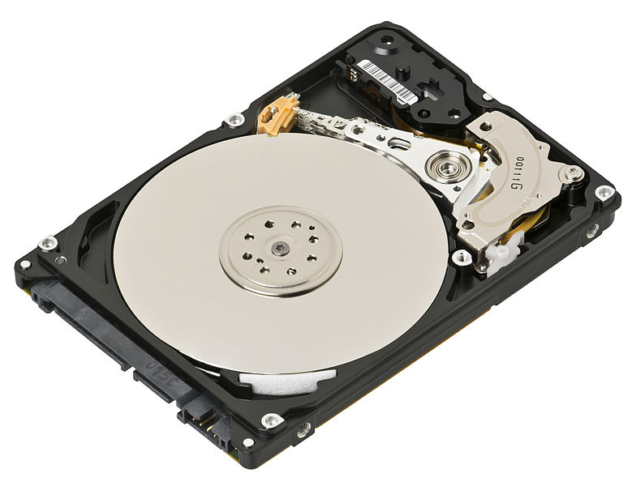
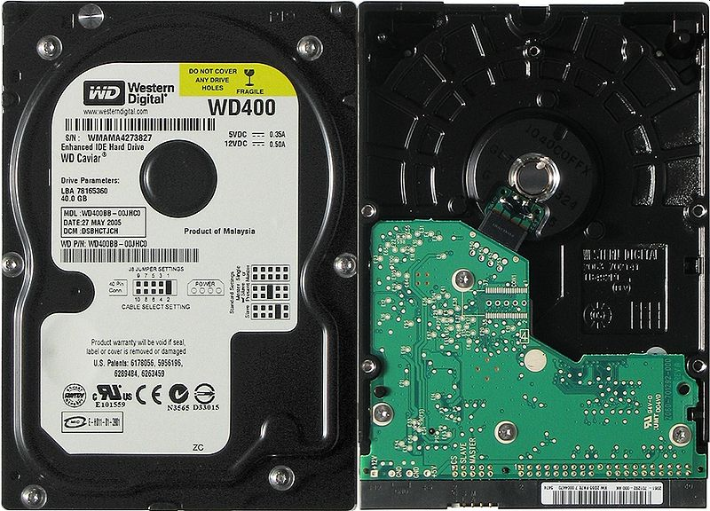

HARD-DISK

Ο σκληρός δίσκος είναι ένα μαγνητικό αποθηκευτικό μέσο - συσκευή που χρησιμοποιείται στους ηλεκτρονικούς υπολογιστές,
στις ψηφιακές βιντεοκάμερες, στα φορητά MP3 players, στα επιτραπέζια ψηφιακά βίντεο, στις κονσόλες παιχνιδομηχανών,
στους ψηφιακούς επίγειους και δορυφορικούς τηλεοπτικούς δέκτες κλπ. Ένας σκληρός δίσκος αποθηκεύει μεγάλες ποσότητες
δεδομένων και η χωρητικότητα των σκληρών δίσκων που κυκλοφορούν στο εμπόριο ξεκινά από τα 160 GB και φτάνει έως τα 3 ΤΒ.
Για μεγαλύτερες χωρητικότητες που αγγίζουν τα 8 TB (terabyte) χρησιμοποιούνται κυκλώματα πολλαπλών σκληρών δίσκων,
με τη μορφή συρταρωτής διάταξης. Η ταχύτητα προσπέλασης των δεδομένων είναι ταχύτερη από το DVD/R/RW αλλά πολύ πιο
αργή από τη μνήμη του υπολογιστή.
Οι σκληροί δίσκοι χρησιμοποιούνται στους υπολογιστές για την αποθήκευση δεδομένων, κυρίως προγραμμάτων και αρχείων
που είναι απαραίτητο να διατηρηθούν, σε αντίθεση με την μνήμη RAM όπου τα δεδομένα διαγράφονται με την διακοπή
τροφοδοσίας ηλεκτρικού ρεύματος. Επίσης όλοι οι σκληροί δίσκοι πλέον, έχουν ενσωματωμένη κρυφή μνήμη (cache RAM)
για προσωρινή αποθήκευση που η χωρητικότητα της ξεκινά από τα 8MB(ελάχιστοι πλέον) και φτάνει τα 64MB.
Σταδιακά οι σκληροί δίσκοι δίνουν τη θέση τους σε δίσκους στερεάς κατάστασης (SSD, Solid State Drives), οι οποίοι
εξελίσσονται με ραγδαίο ρυθμό κυρίως λόγω της χαμηλής τους κατανάλωσης σε ρεύμα (που οφείλεται στην παντελή έλλειψη
ηλεκτροκινητήρα) και το φθηνό σχετικά κόστος παραγωγής. Από τον Οκτώβριο του 2010 λόγω της τεχνολογίας SSD είναι
δυνατή η λειτουργία των NetBooks για χρονικό διάστημα περίπου 10 ωρών συνεχόμενα.